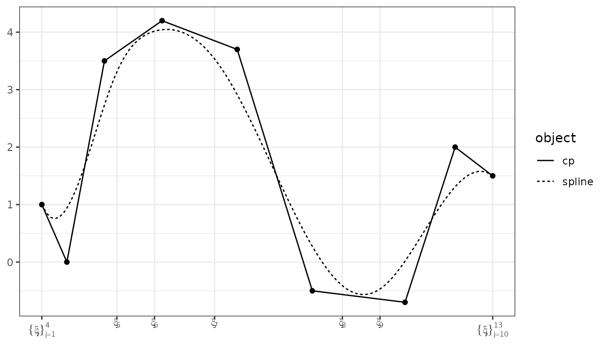
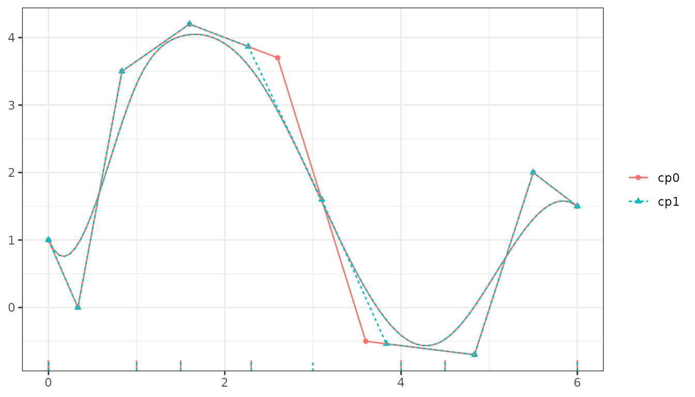
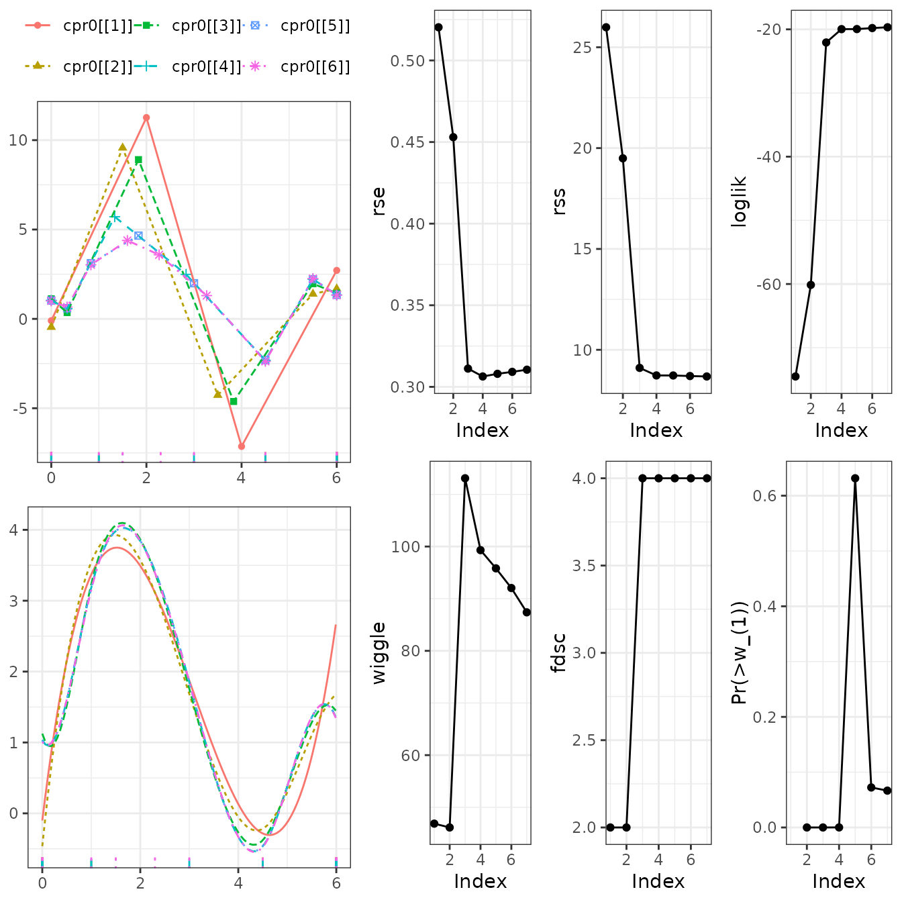
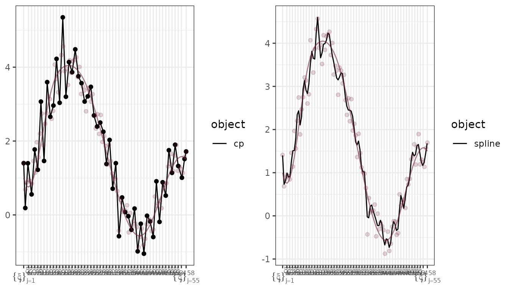
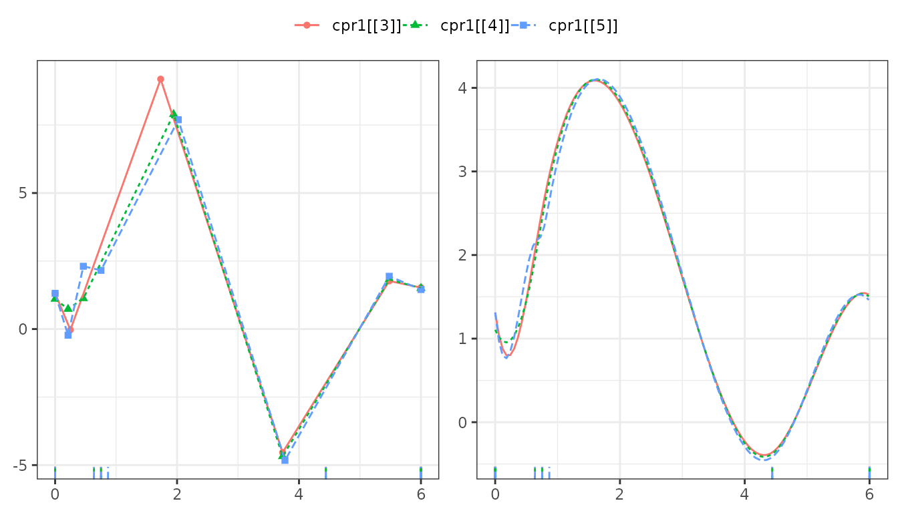

library(cpr)
packageVersion("cpr")
## [1] '0.4.0.9000'The purpose of this vignette is to illustrate how the Control Polygon Reduction (CPR) method can be used to select a set of knots defining B-spline to get a low degree of freedom and smooth fit to data. We start with a primer on B-splines and control polygons then the development and use of CPR.
B-splines and Control Polygons
The term “spline†is likely derived from shipwright or draftsmen splines, thin wood strips, held in place by weights, used to define curves. These splines naturally minimize strain energy and the use of additional weights at strategic locations on the spline are needed to achieve specific curvatures. Cubic B-splines are not dissimilar.
Splines are piecewise polynomial curves that are differentiable up to a prescribed order. B-splines are based on a basis of polynomial functions.
Definitions and notation for uni-variable and multi-variable B-splines and the associated control polygons and control nets are presented in the following. Two very good references for splines are de Boor (2001) and Prautzsch, Boehm, and Paluszny (2002) if you wish to dig into the details.
B-splines
A curve defined by is a spline of order (degree ), with knots where and if is times differentiable at any -fold knot, and is a polynomial of order over each interval for
In particular, B-splines, are defined as an affine combination:
where is the basis spline function, is a sequence of interior knots and a total of boundary knots, i.e., the cardinality of the knot sequence is The value of the boundary knots is arbitrary, but a common choice is to use -fold knots on the boundary:
Alternative boundary knots can be used so long as the sequence is non-decreasing. More on the implications of -fold boundary knots follow in the next section.
The B-spline is defined as:
where and
For a set of observations, the basis functions defined above generalize to a matrix:
Within the cpr package we can generate a basis matrix thusly:
x <- seq(0, 5.9999, length.out = 5000)
bmat <- bsplines(x, iknots = c(1, 1.5, 2.3, 4, 4.5), bknots = c(0, 6))
bmat
## Basis matrix dims: [5,000 x 9]
## Order: 4
## Number of internal knots: 5
##
## First 6 rows:
##
## [,1] [,2] [,3] [,4] [,5] [,6] [,7] [,8] [,9]
## [1,] 1.0000000 0.000000000 0.000000e+00 0.000000e+00 0 0 0 0 0
## [2,] 0.9964037 0.003593461 2.878634e-06 5.011451e-10 0 0 0 0 0
## [3,] 0.9928160 0.007172539 1.150485e-05 4.009161e-09 0 0 0 0 0
## [4,] 0.9892369 0.010737255 2.586411e-05 1.353092e-08 0 0 0 0 0
## [5,] 0.9856664 0.014287632 4.594188e-05 3.207329e-08 0 0 0 0 0
## [6,] 0.9821045 0.017823691 7.172363e-05 6.264314e-08 0 0 0 0 0Note: the default order for bsplines is 4, and the
default for the boundary knots is the range of x. However,
relying on the default boundary knots can lead to unexpected behavior
as, by definition the splines on the
-fold
upper boundary is 0.
We can quickly view the plot of each of these spline functions as well.
plot(bmat, show_xi = TRUE, show_x = TRUE)
A few of many important properties of the basis functions:
and
cpr::bsplines vs splines::bs
Part of the base R distribution is the splines package which build
B-splines by calling bs. There are three areas where the
functions differ: 1. input arguments, 2. attributes of the returned
matrix, and 3. behavior at the right boundary knot.
Input Arguments
args(bsplines)
## function (x, iknots = NULL, df = NULL, bknots = range(x), order = 4L)
## NULL
args(splines::bs)
## function (x, df = NULL, knots = NULL, degree = 3, intercept = FALSE,
## Boundary.knots = range(x), warn.outside = TRUE)
## NULL| cpr::bsplines | splines::bs | Notes |
|---|---|---|
| x | x | numeric vector; the predictor variable |
| iknots | knots | internal knots |
| bknots | Boundary.knots | boundary knots |
| order | degree | polynomial order = polynomial degree + 1 |
| df | df | degrees of freedom |
| intercept | ||
| warn.outside |
bsplines does not have the intercept nor
the warn.outside arguments because the matrix generated by
bsplines effectively always has
intercept = TRUE and warn.outside = TRUE. How
values of x at the right boundary, and outside the boundary
are treated also differ between the two functions.
Attributes of the returned matrices
The default call for both B-spline functions returns a basis matrix
for a order 4 (degree 3; cubic) B-spline with boundary knots placed at
range(x). However, the returns are not the same.
bs_mat <- splines::bs(x, knots = attr(bmat, "iknots"), Boundary.knots = attr(bmat, "bknots"))
str(attributes(bmat))
## List of 10
## $ dim : int [1:2] 5000 9
## $ order : num 4
## $ df : num 9
## $ iknots : num [1:5] 1 1.5 2.3 4 4.5
## $ bknots : num [1:2] 0 6
## $ xi : num [1:13] 0 0 0 0 1 1.5 2.3 4 4.5 6 ...
## $ xi_star : num [1:9] 0 0.333 0.833 1.6 2.6 ...
## $ class : chr [1:2] "cpr_bs" "matrix"
## $ call : language bsplines(x = x, iknots = c(1, 1.5, 2.3, 4, 4.5), bknots = c(0, 6))
## $ environment:<environment: R_GlobalEnv>
str(attributes(bs_mat))
## List of 7
## $ dim : int [1:2] 5000 8
## $ dimnames :List of 2
## ..$ : NULL
## ..$ : chr [1:8] "1" "2" "3" "4" ...
## $ degree : int 3
## $ knots : num [1:5] 1 1.5 2.3 4 4.5
## $ Boundary.knots: num [1:2] 0 6
## $ intercept : logi FALSE
## $ class : chr [1:3] "bs" "basis" "matrix"The bspline_mat has additional attributes related to the
control polygons.
The major difference is the in the dimension of the matrices. By
default splines::bs omits one column from the basis matrix
such that when using using the function is a regression formula the
resulting design matrix is not rank deficient. Using
bsplines would suggest using a +0 or
-1 in the regression formula to omit the intercept (is
nuance is handled in calls to cp so the end user need not
worry about it).
Right Continuity
By definition, the
are non-negative right-continuous functions. bsplines
adheres to the definition strictly, whereas splines::bs
uses a pivoting method to allow for non-zero extrapolations outside the
support.
Example: for the cpr::bsplines call, notice that the
first, third, and fifth rows, corresponding to values outside the
support are all zeros as are the row sums. Compare that to the
splines::bs which returns negative values and in the
matrix, and all rows sum to 1.
bspline_eg <- bsplines(c(0, 1, 2, 5, 6), bknots = c(1, 5))
## Warning in bsplines(c(0, 1, 2, 5, 6), bknots = c(1, 5)): At least one x value <
## min(bknots)
## Warning in bsplines(c(0, 1, 2, 5, 6), bknots = c(1, 5)): At least one x value
## >= max(bknots)
bs_eg <- splines::bs(c(0, 1, 2, 5, 6), Boundary.knots = c(1, 5), intercept = TRUE )
## Warning in splines::bs(c(0, 1, 2, 5, 6), Boundary.knots = c(1, 5), intercept =
## TRUE): some 'x' values beyond boundary knots may cause ill-conditioned bases
head(bspline_eg)
## [,1] [,2] [,3] [,4]
## [1,] 0.000000 0.000000 0.000000 0.000000
## [2,] 1.000000 0.000000 0.000000 0.000000
## [3,] 0.421875 0.421875 0.140625 0.015625
## [4,] 0.000000 0.000000 0.000000 0.000000
## [5,] 0.000000 0.000000 0.000000 0.000000
rowSums(bspline_eg)
## [1] 0 1 1 0 0
head(bs_eg)
## 1 2 3 4
## [1,] 1.953125 -1.171875 0.234375 -0.015625
## [2,] 1.000000 0.000000 0.000000 0.000000
## [3,] 0.421875 0.421875 0.140625 0.015625
## [4,] 0.000000 0.000000 0.000000 1.000000
## [5,] -0.015625 0.234375 -1.171875 1.953125
rowSums(bs_eg)
## [1] 1 1 1 1 1Control Polygons
The spline is a convex sum of the coefficients A meaningful geometric relationship between and exist in the form of a control polygon, a strong convex hull for
is a sequence of control vertices. The control polygon can be thought of as a piecewise linear function approximating the spline function. Changes in convexity and other subtle characteristics of the spline function are exaggerated by the control polygon.
For example, using the basis matrix defined above and the following coefficients we can easily define a spline function and control polygon.
Plotting the control polygon and the corresponding spline:
plot(cp0, show_spline = TRUE)
Knot Influence
Spline Spaces and Inserting a Knot
Consider two knot sequences and Then, for a given polynomial order the spline space (de Boor 2001, pg135). Given this relationship between spline spaces, and the convex sums generating spline functions, Boehm (1980) presented a method for inserting a knots into the knot sequence such that the spline function is unchanged. Specifically, for then there exist a such that
When inserting a singleton into then where is a lower bi-diagonal matrix with as defined above in the de~Boor recursive algorithm. Through recursion we can insert as many knots into without changing the value of the spline function.
For an example, insert a knot into the control polygon defined above.
cp1 <- insert_a_knot(cp0, xi_prime = 3)
plot(cp0, cp1, color = TRUE, show_spline = TRUE)
Assessing influence of
Here we derive a metric for assessing how much influence has on Using the relationship defined by Boehm (1980), we can derive a metric for the influence of on the spline function.
Start with an defined and The relationship holds if has zero influence. However, in practice, we would expect that the relationship is for a set of deviations which would be equal to if has no influence on the spline.
We can estimate via least squares. To simplify the notation in the following we drop some of the subscripts and parenthesis, that is, let
Finally, we define the influence of on as
The influence of knots on the spline used in the above section.
x <- influence_of_iknots(cp0)
summary(x)
## j iknot influence influence_rank chisq chisq_rank p_value os_p_value
## 1 5 1.0 1.64661178 5 NA NA NA NA
## 2 6 1.5 0.29066719 2 NA NA NA NA
## 3 7 2.3 0.31205029 3 NA NA NA NA
## 4 8 4.0 0.07702981 1 NA NA NA NA
## 5 9 4.5 0.41987740 4 NA NA NA NALet’s look at the following plots to explore the influence of (the third interior knot in a order spline) on the spline. In panel (a) we see the original control polygon and spline along with the coarsened control polygon and spline. Note that the there are fewer control points, and the spline deviates from the original. In panel (b) we see that the restored control polygon is the result of inserting into the coarsened control polygon of panel (a). These plots are also a good example of the local support and strong convexity of the control polygons as there are only control points which are impacted by the removal and re-insertion of Lastly, in panel (c) we see all three control polygons plotted together.
ggpubr::ggarrange(
ggpubr::ggarrange(
plot(x, j = 3, coarsened = TRUE, restored = FALSE, color = TRUE, show_spline = TRUE) +
ggplot2::theme(legend.position = "none")
, plot(x, j = 3, coarsened = FALSE, restored = TRUE, color = TRUE, show_spline = TRUE) +
ggplot2::theme(legend.position = "none")
, labels = c("(a)", "(b)")
, nrow = 1
)
, plot(x, j = 3, coarsened = TRUE, restored = TRUE, color = TRUE, show_spline = TRUE) +
ggplot2::theme(legend.position = "bottom")
, labels = c("", "(c)")
, nrow = 2
, ncol = 1
, heights = c(1, 2)
)
Next, consider the influence of the fourth interior knot. By the influence metric defined above, this is the least influential knot in the sequence. This can be seen easily as the spline between the original and the coarsened spline are very similar, this is despite the apparent large difference in the magnitude of the control point ordinates between the original and coarsened control polygons. However, when re-inserting the recovered control polygon is very similar to the original, hence the low influence of
ggpubr::ggarrange(
ggpubr::ggarrange(
plot(x, j = 4, coarsened = TRUE, restored = FALSE, color = TRUE, show_spline = TRUE) +
ggplot2::theme(legend.position = "none")
, plot(x, j = 4, coarsened = FALSE, restored = TRUE, color = TRUE, show_spline = TRUE) +
ggplot2::theme(legend.position = "none")
, labels = c("(a)", "(b)")
, nrow = 1
)
, plot(x, j = 4, coarsened = TRUE, restored = TRUE, color = TRUE, show_spline = TRUE) +
ggplot2::theme(legend.position = "bottom")
, labels = c("", "(c)")
, nrow = 2
, ncol = 1
, heights = c(1, 2)
)If you were required to omit an internal knot, it would be preferable to omit over or as that will have the least impact on the spline approximation of the original functional form.
Fitting B-splines to noisy data
Start with the spline we have been using and add some noise to it.
set.seed(42)
x <- seq(0, 5.99999, length.out = 100)
bmat <- bsplines(x, iknots = c(1, 1.5, 2.3, 4, 4.5), bknots = c(0, 6))
theta <- matrix(c(1, 0, 3.5, 4.2, 3.7, -0.5, -0.7, 2, 1.5), ncol = 1)
DF <- data.frame(x = x, truth = as.numeric(bmat %*% theta))
DF$y <- as.numeric(bmat %*% theta + rnorm(nrow(bmat), sd = 0.3))
original_data_ggplot_layers <-
list(
ggplot2::geom_point(data = DF
, mapping = ggplot2::aes(x = x, y = y)
, inherit.aes = FALSE
, color = "#6F263D"
, alpha = 0.2)
,
ggplot2::geom_line(data = DF
, mapping = ggplot2::aes(x = x, y = truth)
, inherit.aes = FALSE
, color = "#6F263D"
, alpha = 0.6)
)
ggplot2::ggplot(DF) + ggplot2::theme_bw() + original_data_ggplot_layers
To fit a spline and control polygon to the noisy data use a formula
statement in the cp call. In this example we will use the
known internal knots and add one extra.
initial_cp <-
cp(y ~ bsplines(x, iknots = c(1, 1.5, 2.3, 3.0, 4, 4.5), bknots = c(0, 6))
, data = DF
, keep_fit = TRUE # default is FALSE
)
plot(initial_cp, show_spline = TRUE) + original_data_ggplot_layersThe plot above shows the fitted spline is does well at approximating the true spline function. Just to make it perfectly clear, the regression coefficients are the estimates of the ordinates for the control polygon:
initial_cp$fit |> coef() |> unname()
## [1] 1.0032390 0.6730762 3.0035459 4.4136192 3.5386419 1.7539897
## [7] -0.4708520 -0.7312097 2.1631310 1.3575369
initial_cp$cp$theta
## [1] 1.0032390 0.6730762 3.0035459 4.4136192 3.5386419 1.7539897
## [7] -0.4708520 -0.7312097 2.1631310 1.3575369Let’s now look at the influence of the internal knots on the fit
initial_cp |>
influence_of_iknots() |>
summary()
## j iknot influence influence_rank chisq chisq_rank p_value os_p_value
## 1 5 1.0 0.16235075 5 0.9100724 5 0.3400952 0.66205444
## 2 6 1.5 0.05785223 3 0.4331666 2 0.5104392 0.11947108
## 3 7 2.3 0.05128404 2 0.5061398 3 0.4768147 0.30134562
## 4 8 3.0 0.08264093 4 0.8363492 4 0.3604430 0.37410640
## 5 9 4.0 0.02585915 1 0.2230694 1 0.6367111 0.06662766
## 6 10 4.5 0.39575696 6 2.6821030 6 0.1014816 0.47378677The least influential knot is the extra knot inserted. Good, we this is the expected result.
How would someone determine if the influence was significant? That is, how can we test the null hypothesis
Under the null hypothesis that the knot has zero influence and under standard ordinary least squares regression assumptions the regression coefficients, (the ordinates of the control polygon are the regression coefficients), are realizations of a Gaussian random variable. Then
where is the variance-covariance matrix for the regression coefficients, and denotes the Moore-Penrose inverse of the matrix. By construction, is singular and thus the standard inverse does not exist and a generalized inverse is necessary. This yields the test statistic following an F distribution with 1, and degrees of freedom, The second degree of freedom is dependent on the sample size, the number of regression parameters, and the type of regression used to estimate the ordinates.
To simplify the work, and generalize the approach, we will use the fact that the limiting distribution of as is that is,
Now, if we are interested in removing the knot with the lowest influence we are interested in the minimum. So the hypothesis test we are actually interested in is which follows the distribution where is the distribution function of the chi-square distribution with one degree of freedom.
The results generated by calling influence_of_iknots.
report two sets of p-values. The first is the p-value is the probability
of observed chisq value greater than reported, and the second p-value is
the probability of the rank order statistic exceeding the observed
value.
initial_cp |>
influence_of_iknots() |>
summary() |>
knitr::kable(row.names = TRUE)| j | iknot | influence | influence_rank | chisq | chisq_rank | p_value | os_p_value | |
|---|---|---|---|---|---|---|---|---|
| 1 | 5 | 1.0 | 0.1623508 | 5 | 0.9100724 | 5 | 0.3400952 | 0.6620544 |
| 2 | 6 | 1.5 | 0.0578522 | 3 | 0.4331666 | 2 | 0.5104392 | 0.1194711 |
| 3 | 7 | 2.3 | 0.0512840 | 2 | 0.5061398 | 3 | 0.4768147 | 0.3013456 |
| 4 | 8 | 3.0 | 0.0826409 | 4 | 0.8363492 | 4 | 0.3604430 | 0.3741064 |
| 5 | 9 | 4.0 | 0.0258592 | 1 | 0.2230694 | 1 | 0.6367111 | 0.0666277 |
| 6 | 10 | 4.5 | 0.3957570 | 6 | 2.6821030 | 6 | 0.1014816 | 0.4737868 |
It is worth remembering how fraught binary classification of statistical (non)significance can be. Just because the p-value is low does not mean that the knot is influential, just as a high p-value dose not mean that the knot is not influential. Sample size, over-fitting, and other factors can/will lead to poor selection of a model if you only consider these p-values.
That said, consider which has the lowest influence weight. Let’s omit that knot and refit the model.
first_reduction_cp <-
cp(y ~ bsplines(x, iknots = c(1, 1.5, 2.3, 3, 4.5), bknots = c(0, 6)), data = DF)
first_reduction_cp |>
influence_of_iknots() |>
summary() |>
knitr::kable(row.names = TRUE)| j | iknot | influence | influence_rank | chisq | chisq_rank | p_value | os_p_value | |
|---|---|---|---|---|---|---|---|---|
| 1 | 5 | 1.0 | 0.1957262 | 4 | 1.1517249 | 4 | 0.2831884 | 0.4369320 |
| 2 | 6 | 1.5 | 0.0345902 | 2 | 0.2881794 | 1 | 0.5913896 | 0.0723383 |
| 3 | 7 | 2.3 | 0.0238548 | 1 | 0.2900566 | 2 | 0.5901843 | 0.3202087 |
| 4 | 8 | 3.0 | 0.0782231 | 3 | 0.8844555 | 3 | 0.3469842 | 0.2305056 |
| 5 | 9 | 4.5 | 5.9074903 | 5 | 46.2296402 | 5 | 0.0000000 | 0.0000000 |
After omitting one knot and refitting the model we see that is the least influential. Just for fun, let’s omit that knot, and refit. Let’s continue that process all the way down to zero knots.
second_reduction_cp <-
cp(y ~ bsplines(x, iknots = c(1, 1.5, 3, 4.5), bknots = c(0, 6)), data = DF)
second_reduction_cp |>
influence_of_iknots() |>
summary() |>
knitr::kable(row.names = TRUE)| j | iknot | influence | influence_rank | chisq | chisq_rank | p_value | os_p_value | |
|---|---|---|---|---|---|---|---|---|
| 1 | 5 | 1.0 | 0.4805752 | 3 | 3.8031184 | 3 | 0.0511572 | 0.0146519 |
| 2 | 6 | 1.5 | 0.0019515 | 1 | 0.0186252 | 1 | 0.8914463 | 0.6315108 |
| 3 | 7 | 3.0 | 0.1381508 | 2 | 1.3834860 | 2 | 0.2395083 | 0.0450848 |
| 4 | 8 | 4.5 | 6.2382229 | 4 | 59.9559534 | 4 | 0.0000000 | 0.0000000 |
The least influential knot in the second reduction is and that will be omitted for the third reduction.
third_reduction_cp <-
cp(y ~ bsplines(x, iknots = c(1, 3, 4.5), bknots = c(0, 6)), data = DF)
third_reduction_cp |>
influence_of_iknots() |>
summary() |>
knitr::kable(row.names = TRUE)| j | iknot | influence | influence_rank | chisq | chisq_rank | p_value | os_p_value | |
|---|---|---|---|---|---|---|---|---|
| 1 | 5 | 1.0 | 3.0669773 | 2 | 41.672311 | 2 | 0.0000000 | 0.00e+00 |
| 2 | 6 | 3.0 | 0.4304104 | 1 | 3.986697 | 1 | 0.0458609 | 9.65e-05 |
| 3 | 7 | 4.5 | 6.6872293 | 3 | 73.937519 | 3 | 0.0000000 | 0.00e+00 |
Within the third reduction, the least influential knot is and that knot will be omitted for the fourth reduction.
fourth_reduction_cp <-
cp(y ~ bsplines(x, iknots = c(1, 4.5), bknots = c(0, 6)), data = DF)
fourth_reduction_cp |>
influence_of_iknots() |>
summary() |>
knitr::kable(row.names = TRUE)| j | iknot | influence | influence_rank | chisq | chisq_rank | p_value | os_p_value | |
|---|---|---|---|---|---|---|---|---|
| 1 | 5 | 1.0 | 5.952998 | 1 | 107.2956 | 1 | 0 | 0 |
| 2 | 6 | 4.5 | 9.517375 | 2 | 142.2148 | 2 | 0 | 0 |
Of the two remaining internal knots, is the least influential and will be omitted for the fifth reduction.
fifth_reduction_cp <-
cp(y ~ bsplines(x, iknots = 4.5, bknots = c(0, 6)), data = DF)
fifth_reduction_cp |>
influence_of_iknots() |>
summary() |>
knitr::kable(row.names = TRUE)| j | iknot | influence | influence_rank | chisq | chisq_rank | p_value | os_p_value | |
|---|---|---|---|---|---|---|---|---|
| 1 | 5 | 4.5 | 4.103958 | 1 | 31.66441 | 1 | 0 | 0 |
Only one knot can be omitted from the fifth to the sixth reduction. Having the sixth reduction, where there are zero internal knots, lets us compare model fits to a model with just a order polynomial.
sixth_reduction_cp <-
cp(y ~ bsplines(x, bknots = c(0, 6)), data = DF)
sixth_reduction_cp |>
influence_of_iknots() |>
summary()
## j iknot influence influence_rank chisq chisq_rank p_value os_p_value
## 1 4 NA NA NA NA NA NA NALet’s compare all the fits. We will start by looking at the control polygons and splines.
The control polygons, panel (a), we see that the sixth, fifth, and fourth reductions are different from the initial, first, second, and third reductions, and for the splines, the fifth and sixth reductions are easily identified as different.
Next, the graphic below will let us compare these models to the truth, and the observed data.

The dashed black line is the spline fitted to the data (light burgundy dots) and the true value of the target function is the burgundy line. In the fifth reduction there is an easily noticeable difference between the fitted spline and the target function. Between the initial control polygon and the first three reductions it is difficult to visually discern any meaningful difference between the fits.
Thus, I would argue that the third reduction is the preferable model as it has the fewest degrees of freedom while providing a good quality of fit. This conclusion is supported by looking at the residual standard error (rse) where the degrees of freedom, is the sample size minus the number of regression parameters.
list( initial_cp , first_reduction_cp , second_reduction_cp , third_reduction_cp
, fourth_reduction_cp , fifth_reduction_cp , sixth_reduction_cp) |>
rev() |>
lapply(summary) |>
do.call(what = rbind, args = _) |>
cbind(data.frame(reduction = seq(6, 0, by = -1))) |>
knitr::kable(row.names = TRUE)| dfs | n_iknots | iknots | loglik | rss | rse | wiggle | fdsc | reduction | |
|---|---|---|---|---|---|---|---|---|---|
| 1 | 4 | 0 | -74.52286 | 25.991002 | 0.5203264 | 46.86602 | 2 | 6 | |
| 2 | 5 | 1 | 4.5 | -60.13965 | 19.493599 | 0.4529854 | 46.12997 | 2 | 5 |
| 3 | 6 | 2 | 1, 4.5 | -22.06566 | 9.103022 | 0.3111923 | 113.09010 | 4 | 4 |
| 4 | 7 | 3 | 1, 3, 4.5 | -19.96695 | 8.728836 | 0.3063633 | 99.30959 | 4 | 3 |
| 5 | 8 | 4 | 1, 1.5, …. | -19.95683 | 8.727070 | 0.3079926 | 95.81790 | 4 | 2 |
| 6 | 9 | 5 | 1, 1.5, …. | -19.79771 | 8.699341 | 0.3091879 | 92.04602 | 4 | 1 |
| 7 | 10 | 6 | 1, 1.5, …. | -19.67393 | 8.677833 | 0.3105163 | 87.38456 | 4 | 0 |
The wiggle is one measure of wiggliness defined as
fdsc reports the number of
times the first derivative has a sign change.
Control Polygon Reduction
The exercise above of manually identifying and omitting the knot with
the smallest influence in each model would be tedious when working with
a large set of initial knots. Fortunately, the process has been
automated. Calling cpr on a cpr_cp object
defined by a function will automatically omit the internal knot with the
lowest influence.
Example with known knots
Apply CPR to the initial_cp from the above example.
cpr0 <- cpr(initial_cp)
cpr0
## A list of control polygons
## List of 7
## - attr(*, "ioik")=List of 7
## - attr(*, "class")= chr [1:2] "cpr_cpr" "list"There are 7 control polygons within the cpr_cpr object,
length(initial_cp$iknots) + 1. The indexing is set such at
that the
element has
internal knots.
Before exploring the results, let’s just verify that the results of
the call to cpr are the same as the manual results found
about. There are some differences in the metadata of the objects, but
the important parts, like the control polygons, are the same.
all.equal( cpr0[["cps"]][[7]][["cp"]], initial_cp[["cp"]])
## [1] "target is NULL, current is data.frame"
# some attributes are different with the last cp due to how the automation
# creates the call vs how the call was created manually.
call_idx <- which(names(cpr0[["cps"]][[6]]) == "call")
all.equal( cpr0[["cps"]][[6]][-call_idx], first_reduction_cp [-call_idx])
## [1] "target is NULL, current is list"
all.equal( cpr0[["cps"]][[5]][-call_idx], second_reduction_cp[-call_idx])
## [1] "target is NULL, current is list"
all.equal( cpr0[["cps"]][[4]][-call_idx], third_reduction_cp [-call_idx])
## [1] "target is NULL, current is list"
all.equal( cpr0[["cps"]][[3]][-call_idx], fourth_reduction_cp[-call_idx])
## [1] "target is NULL, current is list"
all.equal( cpr0[["cps"]][[2]][-call_idx], fifth_reduction_cp [-call_idx])
## [1] "target is NULL, current is list"
all.equal( cpr0[["cps"]][[1]][-call_idx], sixth_reduction_cp [-call_idx], check.attributes = FALSE)
## [1] "target is NULL, current is list"In the manual process we identified third_reduction_cp
as the preferable model. For the cpr0 object we can quickly
see a similar result as we did for the manual process.
| dfs | n_iknots | iknots | loglik | rss | rse | wiggle | fdsc | Pr(>w_(1)) | |
|---|---|---|---|---|---|---|---|---|---|
| 1 | 4 | 0 | -74.52286 | 25.991002 | 0.5203264 | 46.86602 | 2 | NA | |
| 2 | 5 | 1 | 4.5 | -60.13965 | 19.493599 | 0.4529854 | 46.12997 | 2 | 0.0000000 |
| 3 | 6 | 2 | 1, 4.5 | -22.06566 | 9.103022 | 0.3111923 | 113.09010 | 4 | 0.0000000 |
| 4 | 7 | 3 | 1, 3, 4.5 | -19.96695 | 8.728836 | 0.3063633 | 99.30959 | 4 | 0.0000965 |
| 5 | 8 | 4 | 1, 1.5, …. | -19.95683 | 8.727070 | 0.3079926 | 95.81790 | 4 | 0.6315108 |
| 6 | 9 | 5 | 1, 1.5, …. | -19.79771 | 8.699341 | 0.3091879 | 92.04602 | 4 | 0.0723383 |
| 7 | 10 | 6 | 1, 1.5, …. | -19.67393 | 8.677833 | 0.3105163 | 87.38456 | 4 | 0.0666277 |
The additional columns in this summary, loglik_elbow and
rse_elbow, indicate a location in the plot for either the
loglik or rse by model index (degrees of freedom) where the trade-off
between additional degrees of freedom and improvement in the fix
statistic is negligible. See plot below. This is determined by finding
the breakpoint such that a continuous, but not differentiable at
breakpoint, quadratic spline fits the plot with minimal residual
standard error.
ggpubr::ggarrange(
ggpubr::ggarrange(
plot(cpr0, color = TRUE)
, plot(cpr0, show_cp = FALSE, show_spline = TRUE, color = TRUE)
, ncol = 1
, common.legend = TRUE
)
,
ggpubr::ggarrange(
plot(s0, type = "rse")
, plot(s0, type = "rss")
, plot(s0, type = "loglik")
, plot(s0, type = "wiggle")
, plot(s0, type = "fdsc")
, plot(s0, type = "Pr(>w_(1))")
, common.legend = TRUE
)
, widths = c(2, 3)
)
## Warning: Removed 1 row containing missing values or values outside the scale range
## (`geom_point()`).
## Warning: Removed 1 row containing missing values or values outside the scale range
## (`geom_line()`).
## Warning: Removed 1 row containing missing values or values outside the scale range
## (`geom_point()`).
## Warning: Removed 1 row containing missing values or values outside the scale range
## (`geom_line()`).
Example when knots are unknown
In practice it is be extremely unlikely to know where knots should be placed. Analytic solutions are difficult, if not impossible to derive (Jupp 1978). However, an optimal solution may not be necessary.
From de Boor (2001) (page 106)
“…a B-spline doesn’t change much if one changes its
knots a little bit. Therefore, if one has multiple knots, then it is
very easy to find B-spline almost like with simple knots: Simply replace
knot of multiplicity
by
simple knots nearby.”
That is,
where
So, in the case when we are looking for a good set of knots (a good set of knots should be parsimonious, and provide a good model fit) we start with an initial knot sequence with a high cardinality, this is not without precedent Eilers and Marx (2010). We then apply the CPR algorithm to find a good set of knots.
For example we will use 50 internal knots. Not surprisingly we have a fit that is more “connect-the-dots†than a smooth fit.
initial_cp <- cp(y ~ bsplines(x, df = 54, bknots = c(0, 6)), data = DF)
ggpubr::ggarrange(
plot(initial_cp, show_cp = TRUE, show_spline = FALSE) + original_data_ggplot_layers
,
plot(initial_cp, show_cp = FALSE, show_spline = TRUE) + original_data_ggplot_layers
)
Apply CPR to the initial_cp and look at the summary.
Only the first 10 of 51 rows are provided here.
cpr1 <- cpr(initial_cp)| dfs | n_iknots | iknots | loglik | rss | rse | wiggle | fdsc | Pr(>w_(1)) |
|---|---|---|---|---|---|---|---|---|
| 4 | 0 | -74.52286 | 25.991002 | 0.5203264 | 46.86602 | 2 | NA | |
| 5 | 1 | 4.440871…. | -60.80852 | 19.756126 | 0.4560255 | 44.96627 | 2 | 0.0000000 |
| 6 | 2 | 0.752226…. | -26.01135 | 9.850479 | 0.3237164 | 246.23540 | 4 | 0.0000000 |
| 7 | 3 | 0.636956…. | -24.77752 | 9.610379 | 0.3214614 | 104.90530 | 4 | 0.0020696 |
| 8 | 4 | 0.636956…. | -19.81416 | 8.702204 | 0.3075535 | 639.20789 | 4 | 0.0000000 |
| 9 | 5 | 0.521686…. | -19.38824 | 8.628390 | 0.3079245 | 774.74506 | 6 | 0.0076769 |
| 10 | 6 | 0.175876…. | -18.77810 | 8.523739 | 0.3077470 | 3232.38887 | 6 | 0.0006350 |
| 11 | 7 | 0.175876…. | -18.72815 | 8.515228 | 0.3093165 | 4256.85750 | 6 | 0.1540572 |
| 12 | 8 | 0.175876…. | -18.22634 | 8.430195 | 0.3095120 | 9158.80131 | 8 | 0.0002060 |
| 13 | 9 | 0.175876…. | -18.22608 | 8.430151 | 0.3112849 | 9215.39496 | 8 | 0.8567697 |
From this, the preferable model is suggested to be index 5, the model with four internal knots. Inspection of the rse by index plot, I would argue from a manual selection that index 5 is preferable overall.
plot(x, type = "rse")
Let’s compare the models in indices 3, 4, and 5.
ggpubr::ggarrange(
plot(cpr1[[3]], cpr1[[4]], cpr1[[5]], show_cp = TRUE, show_spline = FALSE, color = TRUE)
,
plot(cpr1[[3]], cpr1[[4]], cpr1[[5]], show_cp = FALSE, show_spline = TRUE, color = TRUE)
,
common.legend = TRUE
)
The noticeable differences are, for the most part, located on the left side of the support between between 0 and 1. For the fifth index, there is change in convexity of the spline. Knowing that the models at index 3 and 4 are good fits too, then it would be easy not select index 5 due to extra “wiggle†in the spline.
In practice I would likely pick the model in index 4 to have a smooth (small wiggle) and low rse. Compare the selected model to the original data.
ggpubr::ggarrange(
plot(cpr1[[3]], show_cp = FALSE, show_spline = TRUE) +
ggplot2::ggtitle("Model Index 3") +
original_data_ggplot_layers
, plot(cpr1[[4]], show_cp = FALSE, show_spline = TRUE) +
ggplot2::ggtitle("Model Index 4") +
original_data_ggplot_layers
, plot(cpr1[[5]], show_cp = FALSE, show_spline = TRUE) +
ggplot2::ggtitle("Model Index 5") +
original_data_ggplot_layers
, nrow = 1
, legend = "none"
)
Extensions to higher dimensions
CPR works for uni-variable B-splines. By taking tensor products of B-splines, and building a control-net, the higher-dimensional analog of a control polygon, we can apply similar methods to estimate a surface. Details on the Control Net Reduction method are presented in
vignette(topic = "cnr", package = "cpr")References
Session Info
sessionInfo()
## R version 4.4.1 (2024-06-14)
## Platform: x86_64-pc-linux-gnu
## Running under: Ubuntu 22.04.4 LTS
##
## Matrix products: default
## BLAS: /usr/lib/x86_64-linux-gnu/openblas-pthread/libblas.so.3
## LAPACK: /usr/lib/x86_64-linux-gnu/openblas-pthread/libopenblasp-r0.3.20.so; LAPACK version 3.10.0
##
## locale:
## [1] LC_CTYPE=C.UTF-8 LC_NUMERIC=C LC_TIME=C.UTF-8
## [4] LC_COLLATE=C.UTF-8 LC_MONETARY=C.UTF-8 LC_MESSAGES=C.UTF-8
## [7] LC_PAPER=C.UTF-8 LC_NAME=C LC_ADDRESS=C
## [10] LC_TELEPHONE=C LC_MEASUREMENT=C.UTF-8 LC_IDENTIFICATION=C
##
## time zone: UTC
## tzcode source: system (glibc)
##
## attached base packages:
## [1] stats graphics grDevices utils datasets methods base
##
## other attached packages:
## [1] cpr_0.4.0.9000 qwraps2_0.6.0
##
## loaded via a namespace (and not attached):
## [1] sass_0.4.9 utf8_1.2.4 generics_0.1.3 tidyr_1.3.1
## [5] rstatix_0.7.2 lattice_0.22-6 lme4_1.1-35.5 digest_0.6.36
## [9] magrittr_2.0.3 evaluate_0.24.0 grid_4.4.1 fastmap_1.2.0
## [13] Matrix_1.7-0 jsonlite_1.8.8 backports_1.5.0 gridExtra_2.3
## [17] purrr_1.0.2 fansi_1.0.6 scales_1.3.0 textshaping_0.4.0
## [21] jquerylib_0.1.4 abind_1.4-5 cli_3.6.3 rlang_1.1.4
## [25] cowplot_1.1.3 munsell_0.5.1 splines_4.4.1 withr_3.0.0
## [29] cachem_1.1.0 yaml_2.3.10 tools_4.4.1 nloptr_2.1.1
## [33] ggsignif_0.6.4 minqa_1.2.7 dplyr_1.1.4 colorspace_2.1-1
## [37] ggplot2_3.5.1 ggpubr_0.6.0 boot_1.3-30 broom_1.0.6
## [41] vctrs_0.6.5 R6_2.5.1 lifecycle_1.0.4 car_3.1-2
## [45] fs_1.6.4 htmlwidgets_1.6.4 MASS_7.3-60.2 ragg_1.3.2
## [49] pkgconfig_2.0.3 desc_1.4.3 pkgdown_2.1.0 pillar_1.9.0
## [53] bslib_0.7.0 gtable_0.3.5 glue_1.7.0 Rcpp_1.0.13
## [57] systemfonts_1.1.0 xfun_0.46 tibble_3.2.1 tidyselect_1.2.1
## [61] highr_0.11 knitr_1.48 farver_2.1.2 nlme_3.1-164
## [65] htmltools_0.5.8.1 carData_3.0-5 rmarkdown_2.27 labeling_0.4.3
## [69] compiler_4.4.1